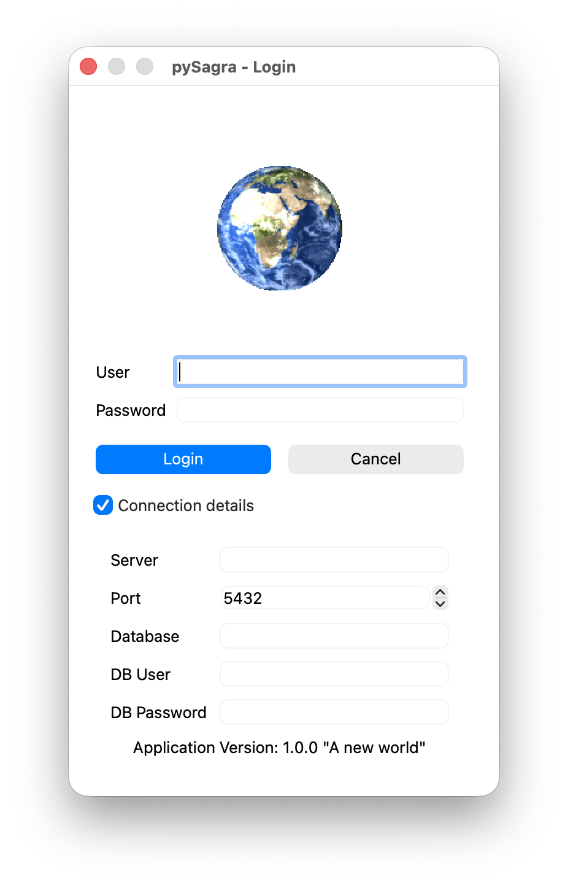
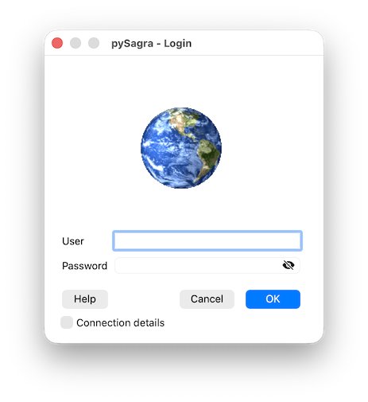

At the first launch of the application, the connection parameters to the server are requested and the window appears as shown in the figure:

The parameters required to establish the connection to the database server are:
There are 2 predefined and unmodifiable system users:
These users are administrators and have been assigned a menu and a profile that allows them full access to all program features
In addition, 3 other users are preloaded:
Being normal users, they can be modified and also deleted. They are users with various limitations, except for utente, but any administrator can modify their permissions, profiles, and menus
The first time you access a server, ALL these parameters must be filled in. On subsequent occasions, the same parameters previously used with success are proposed again, with the exception of the username and password:

To modify the entered parameters, click on the Connection details checkbox